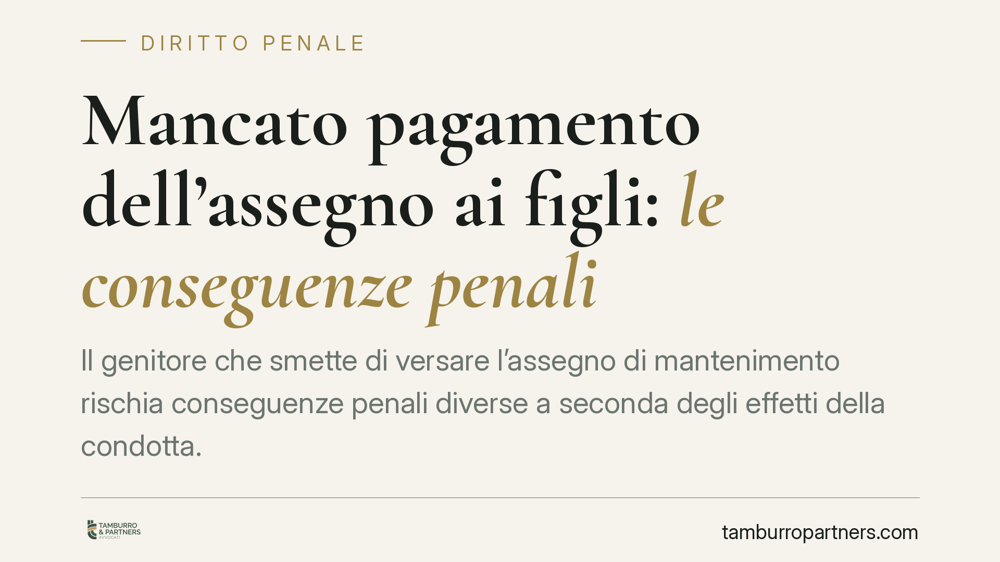

Mancato pagamento dell'assegno ai figli: le conseguenze penali
Il genitore che smette di versare l'assegno di mantenimento rischia conseguenze penali diverse a seconda degli effetti della condotta. Una recente pronuncia di merito torna sul punto: quando l'inadempimento priva il figlio minore dei mezzi di sussistenza, può configurarsi la fattispecie più severa dell'art. 570 c.p. E l'aiuto dei nonni non esonera chi è obbligato.

Il caso
Un genitore smette sistematicamente di versare l'assegno di mantenimento stabilito in sede di separazione. I figli minori continuano a vivere grazie al sostegno economico dei nonni. La questione affrontata in sede di merito è se questo aiuto familiare attenui la responsabilità penale del genitore inadempiente. La risposta è negativa, con un passaggio ulteriore sul tipo di reato contestabile.
Si tratta di una pronuncia di merito non massimata. La riportiamo quindi come orientamento applicativo, non come principio consolidato. Il valore sta nel richiamo a questioni dogmatiche note, che conviene conoscere.
Due norme, due beni tutelati
Qui si incrociano due disposizioni del codice penale, introdotte o riorganizzate con il D.Lgs. 21/2018.
L'art. 570-bis c.p. punisce il coniuge che si sottrae agli obblighi di natura economica derivanti dalla separazione, dal divorzio o dai provvedimenti sull'affidamento dei figli. Il bene protetto è l'adempimento dell'obbligo economico fissato dal giudice: conta la violazione del provvedimento in sé.
L'art. 570, comma 2, n. 2, c.p. punisce invece chi fa mancare i mezzi di sussistenza ai discendenti minori. Qui il bene tutelato non è l'ordine giudiziale, ma la concreta sopravvivenza del minore: il reato scatta quando l'inadempimento compromette la possibilità di soddisfare i bisogni essenziali di vita.
La distinzione è netta sul piano teorico: un conto è violare un obbligo economico quantificato dal giudice, un altro è privare il figlio del necessario per vivere.
Assorbimento o concorso? Una questione aperta
Il punto delicato è il rapporto tra le due norme quando la stessa condotta integra entrambe. La pronuncia richiamata ragiona in termini di assorbimento: la fattispecie dell'art. 570, comma 2, n. 2, essendo più grave e tutelando un interesse più pregnante, assorbirebbe quella dell'art. 570-bis, evitando una doppia incriminazione per lo stesso fatto.
Va detto con chiarezza che non si tratta di un principio pacifico. In giurisprudenza e in dottrina convivono letture diverse, con chi ammette il concorso tra le due figure quando divergono i presupposti e gli interessi offesi. La soluzione dipende dalla ricostruzione del caso concreto e non può essere data per scontata.
Il reato continuato
Quando l'omissione si ripete nel tempo, può trovare applicazione l'art. 81 c.p. (reato continuato): le singole condotte, se riconducibili a un medesimo disegno criminoso, vengono unificate. In concreto si applica la pena prevista per la violazione più grave, aumentata.
È un meccanismo che, di regola, risulta più favorevole rispetto al cumulo materiale delle pene che si avrebbe trattando ogni omissione come reato autonomo. Non si tratta quindi di un semplice inasprimento della sanzione, ma di un regime di unificazione con criterio proprio di calcolo.
L'aiuto dei nonni non esonera
Uno degli aspetti più utili della pronuncia riguarda il sostegno dei familiari. Il fatto che i nonni provvedano al mantenimento dei nipoti non fa venire meno la responsabilità del genitore obbligato.
La ragione è coerente con il bene tutelato: l'obbligo di mantenere i figli grava sui genitori e non è trasferibile a terzi. L'intervento solidaristico dei parenti copre una necessità, ma non cancella l'inadempimento di chi era tenuto a provvedere. Diversamente, si premierebbe l'inadempiente proprio grazie al sacrificio altrui.
Implicazioni pratiche
Per il genitore in difficoltà economica il messaggio è chiaro: smettere di pagare non è una via d'uscita. La sopravvenuta impossibilità di versare l'importo stabilito non legittima l'autoriduzione o la sospensione unilaterale dei versamenti. La strada corretta è rivolgersi al giudice per modificare le condizioni.
Per il genitore collocatario, invece, la pronuncia conferma che l'aiuto ricevuto dai propri genitori non indebolisce l'eventuale azione nei confronti dell'altro.
Cosa fare in concreto
- Non sospendete i versamenti di vostra iniziativa, nemmeno in presenza di una reale difficoltà economica: l'omissione resta valutabile in sede penale.
- Chiedete la modifica giudiziale dell'assegno ai sensi dell'art. 337-quinquies c.c. (o con il procedimento ex art. 473-bis.29 c.p.c.) quando mutano le condizioni reddituali: è lo strumento previsto per adeguare l'importo.
- Documentate il mutamento della vostra situazione (perdita del lavoro, riduzione del reddito, nuovi oneri) prima e durante il procedimento di modifica.
- Conservate le prove dei pagamenti effettuati, anche parziali: possono incidere sulla valutazione della condotta.
- Se siete il genitore creditore, verificate la ricostruzione dei fatti con un professionista prima di presentare querela, per inquadrare correttamente la fattispecie applicabile.
---
*Contributo informativo a cura di Tamburro & Partners - Avv. Giuseppe Tamburro. Non costituisce parere legale.*
Ogni condominio ha una storia a sé.
Se gestisci un'amministrazione e vuoi un confronto su una specifica questione condominiale, scrivi allo studio. Ti rispondiamo entro un giorno lavorativo.